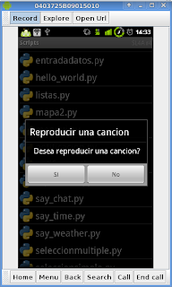
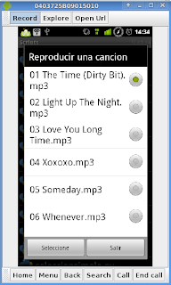
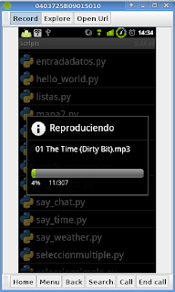

Pensaba escribir primero como crear opciones a un menú pero recordé que existe la posibilidad de reproducir una canción mp3 desde python con el API de SL4A.
Las opciones que tiene el API de SL4A para reproducir música son las siguientes:
- mediaIsPlaying: Consulta si la canción se está reproduciendo en ese momento.
- mediaPlayInfo: Retorna información de la canción.
- mediaPlay: Se reproduce la canción.
- mediaPlayList:
- mediaPlayPause: Se pausa la canción.
- mediaPlaySeek: Se reproduce la canción en un tiempo determinado.
- mediaPlaySetLooping: Se define si se reproduce de nuevo la canción automáticamente.
- mediaPlayStart: Inicia la reproducción del archivo
- mediaPlayClose: Se cierra el archivo de la canción.
Solamente se utilizará en este post las funciones mediaPlay y mediaPlayInfo.
La idea es listar los archivos mp3 en el widget de selección simple y luego reproducir la canción seleccionada.
Antes de reproducir la canción, se toma información de la canción, principalmente la duración de la canción, ese tiempo es luego manejado por una barra de progreso que avanza mientras se reproduce la canción.
El código del programa se muestra a continuación:
#Importar el modulo android,path, la funcion sleep,listdir y exit.
import android
from time import sleep
from os import listdir
from os import path
from sys import exit
#La ruta donde se encuentran los mp3s
ruta = "/sdcard/mp3z/"
#Se crea la instancia de android
droid = android.Android()
#Se muestra un mensaje si se desea reproducir una cancion.si es si, se reproduce si no se sale del programa.
droid.dialogCreateAlert("Reproducir una cancion", "Desea reproducir una cancion?")
droid.dialogSetPositiveButtonText('Si')
droid.dialogSetNegativeButtonText('No')
droid.dialogShow()
#Se captura la respuesta.
respuesta = droid.dialogGetResponse()
if respuesta[1]['which'] == "positive":
#Se busca los archivos y directorios de la ruta definida.
archivos = listdir(ruta)
#Se crea una lista vacia donde se agregaran los nombres de archivos mp3s
listado = []
#Se agregan los archivos mp3 a la lista
for i in archivos:
#Si es un archivo se agrega a listado, se pasa la ruta y el archivo.
if path.isfile("%s%s" %(ruta,i)):
listado.append(i)
#Se muestra un mensaje con la lista de canciones que se pueden reproducir.
droid.dialogCreateAlert("Reproducir una cancion")
droid.dialogSetSingleChoiceItems(listado)
droid.dialogSetPositiveButtonText('Seleccione')
droid.dialogSetNegativeButtonText('Salir')
droid.dialogShow()
#Se captura la respuesta y el item seleccionado
respuesta = droid.dialogGetResponse().result
item = droid.dialogGetSelectedItems()
#Si la respuesta es positiva se reproduce la cancion
if respuesta['which'] == "positive":
droid.makeToast("La cancion selecionada es: %s " %listado[int(item[1][0])])
sleep(2)
droid.makeToast("Reproduciendo la cancion")
#Se agrega a cancion la cancion seleccionada segun la variable item.
cancion = listado[int(item[1][0])]
#Se reproduce la cancion pasando la ruta donde esta el archivo y el archivo.
droid.mediaPlay("%s%s" %(ruta,cancion))
#Se captura la duracion de la cancion representado en milisegundos
tiempo = int(droid.mediaPlayInfo()[1]["duration"])
#Se pasa la duracion de la cancion de milisegundos a segundos
duracion = int(tiempo /1000)
#Se crea una barra de progreso con el titulo reproduciendo, mensaje el nombre de la cancion y la duracion.
droid.dialogCreateHorizontalProgress("Reproduciendo",cancion,duracion)
#Se muestra el widget.
droid.dialogShow()
#Se incrementa el valor de la barra de progreso cada 1 seg.
for i in range(0,duracion):
sleep(1)
droid.dialogSetCurrentProgress(i)
#Al finalizar la cancion se muestra un mensaje de fin de la cancion y se sale de la aplicacion.
droid.makeToast("Fin de la reproduccion de la cancion")
droid.dialogDismiss()
else:
#Si no se selecciono una cancion se sale del programa
droid.makeToast("No se selecciono una cancion-Se sale de la aplicacion")
sleep(1)
else:
#Se selecciono que no se desea reproducir una cancion
droid.makeToast("Fin del programa")
exit()
La siguiente figura muestra la ventana donde se pregunta si se desea reproducir una canción:

La siguiente figura muestra la lista de canciones que se puede reproducir, se selecciona una y luego se le da al botón seleccione.

La última figura muestra el proceso de reproducción de la canción:

A continuación se muestra el código QR del programa:
===
¡Haz tu donativo! Si te gustó el artículo puedes realizar un donativo con Bitcoin (BTC) usando la billetera digital de tu preferencia a la siguiente dirección: 17MtNybhdkA9GV3UNS6BTwPcuhjXoPrSzV
O Escaneando el código QR desde billetera:

Comments !